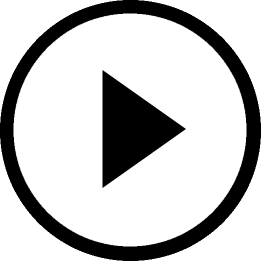

Like Clockwork
My most recent project, "Like Clockwork," is narrative-driven Steampunk adventure. Though short, its main purpose was to stretch my metaphorical writing legs and fully immerse myself in writing a narrative;
perhaps as I should have done with the previous two Twine games.
That being said, while I made some errors during my time crunch, I am still extremely happy with the finished product - from the custom backgrounds to the plot, and especially the steampunk-cockney dialogue.
My professor remarked, "...there's a touch of insanity in this project, and I love it."
That was a review that made me giggle like a kid. Anyway, have a go if you like!
